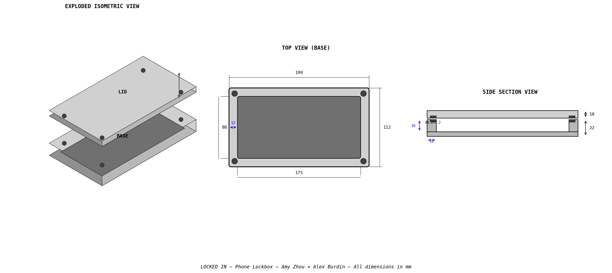
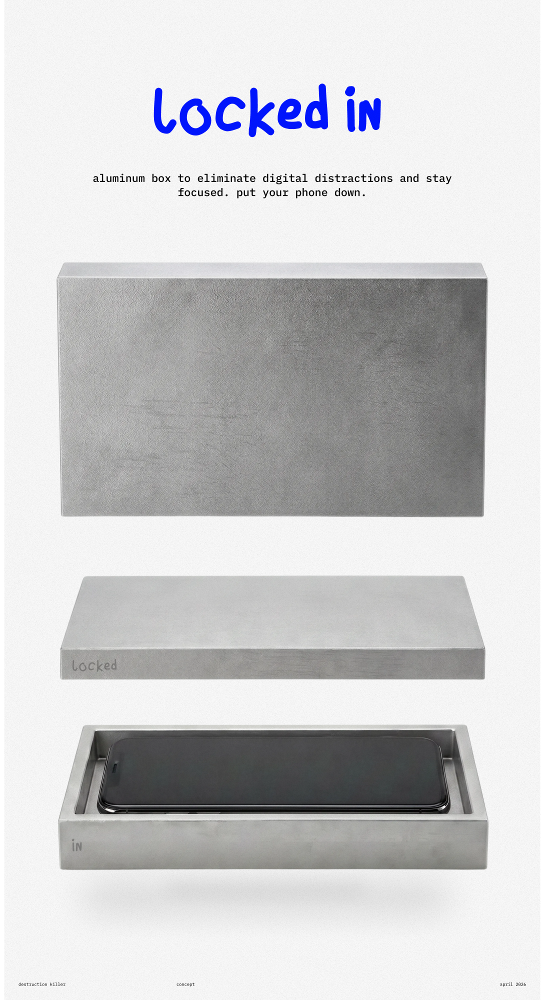
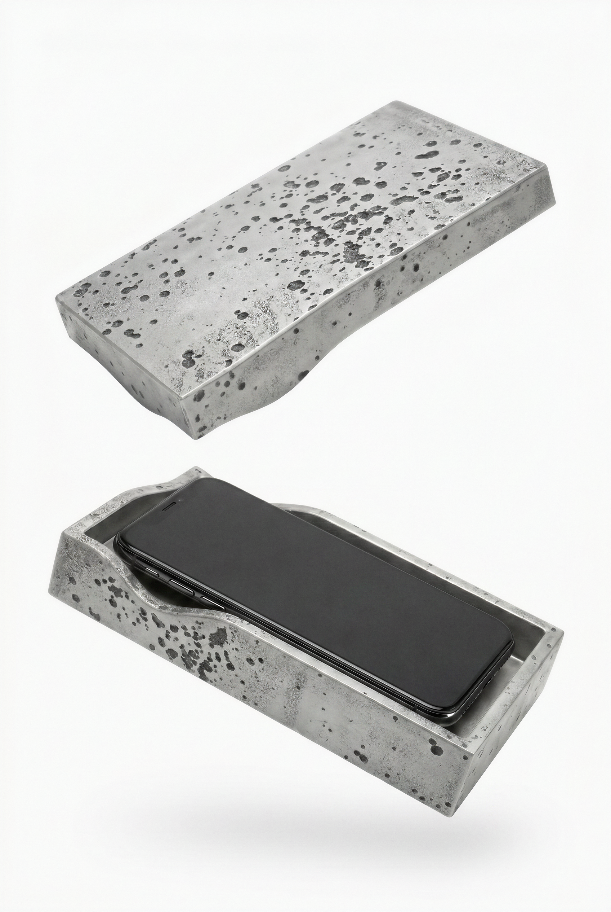

A machined aluminum phone lockbox for focused work


A precision-machined aluminum box that holds your phone. No locks, no timers, no apps. Just enough friction to make you think twice before reaching for it.
The lid attaches with N52 neodymium magnets, strong enough to require intentional effort to open. The satisfying snap when closing creates a psychological commitment to focus.
The 12mm wall thickness provides structural rigidity and enough material for the Ø8.2mm magnet pockets in the corners without compromising the rim.
| Part | Dimension |
|---|---|
| Exterior footprint | 199 × 112 mm |
| Total height (closed) | 32 mm |
| Base height | 22 mm |
| Lid height | 10 mm |
| Phone pocket | 175 × 88 × 16 mm deep |
| Wall thickness | 12 mm uniform |
| Pocket corner radius | 3.2 mm (for 1/4" end mill) |
| Exterior corner radius | 3.0 mm |
| Edge breaks | 1.0 mm fillet |
| Magnet pockets (4× per part) | Ø8.2 × 3.2 mm deep |
| Magnet position | 8mm inset from exterior corners |
| Item | Specification | Qty | Notes |
|---|---|---|---|
| Base | 6061-T6 Aluminum, machined | 1 | From 201×114×24mm billet |
| Lid | 6061-T6 Aluminum, machined | 1 | From 201×114×12mm billet |
| Magnets | N52 Neodymium, 8×3mm disc | 8 | 4 per part, ~2 lbs pull each |
| Adhesive | CA glue or 2-part epoxy | — | For magnet installation |
| Liner (optional) | Microfiber or felt, adhesive-backed | 1 | Cut to pocket floor |
| Tool | Operation |
|---|---|
| 1/4" 2-flute carbide end mill | Pocket roughing and finishing |
| 1/4" 3-flute carbide end mill | Exterior profiling |
| 3mm ball end mill | Corner fillets (or use chamfer tool for edge breaks) |
| 8.2mm end mill or drill | Magnet pockets |
Important: Neodymium magnets are brittle ceramic — do NOT press fit. Use slip fit pockets (8.2mm for 8mm magnets) and secure with CA glue or epoxy.
Mark polarity before separating magnets. Base magnets face North up; lid magnets face South down. Test attraction before gluing.
Recommended magnets: Hailson 8×3mm N52 on Amazon
| Version | Relative Cost | DFM Notes |
|---|---|---|
| V1 — Magnets | Cheapest | All subtractive ops. 8× drilled holes, very fast. Magnets are cheap. Simple assembly. |
| V2 — Curved Sidewall | Most expensive | Wave spline requires 3D surfacing toolpaths. Longer machining time. No extra parts. |
| V3 — Lego Bump | Mid | Raised studs need material milled away, adds machining time. No extra parts or assembly. |
Wave spline ridges on base nest into matching grooves in lid

Base STEP Lid STEP Base STL Lid STLSame geometry on both parts: studs on top, holes on bottom — stackable and interchangeable
Base STEP Lid STEP Base STL Lid STLFor prototyping, print in PLA or PETG. Use 8.0mm magnet holes (not 8.2mm) to account for plastic shrinkage — this gives a friction fit without glue for testing.